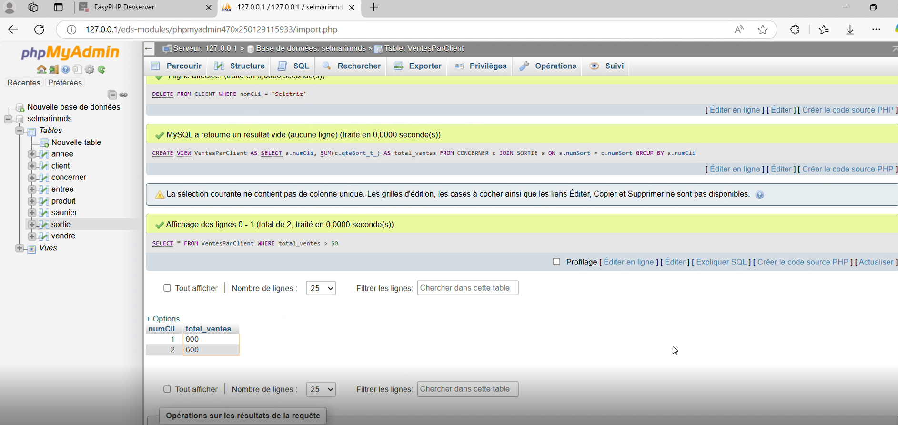

Conception et implémentation d'une base de données
Le but est de concevoir une interface graphique qui facilite la création et l'entretien d'une base de données destinée aux sauniers de l'île de Ré.
Technologies employées : SQL & Python(Tkinter & pandas)
Compétence :